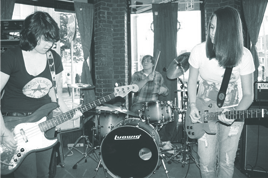

Bright Red Reason - Discography
Buisness As Usual - Live at the Office
Tyngsboro/Medford, MA
- Bubble
Update Required
To play the media you will need to either update your browser to a recent version or update your Flash plugin.
Bright Red Reason started off in the summer of 2009. Catarina joined at first just for bass, but then took on vocal duties as well. At the start of 2010 we threw out our songs from our previous band (except for "Still") and wrote new ones. These new songs would all appear on Knockdown Dragout EP (our first self release). We love playing shows and writing music we believe in. We are currently unsigned and record everything ourselves. We will play any show anywhere so feel free to contact us :D. We are looking into recording a full length album soon ...